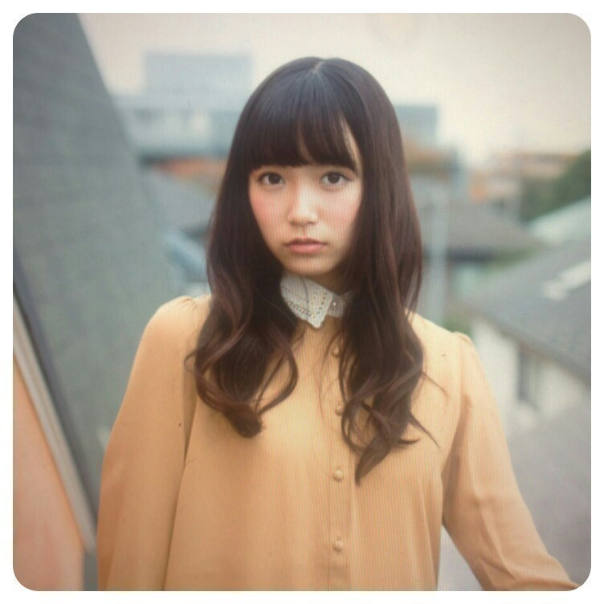

| 2013/12 04 Wed | ひめたん大図鑑58(2012年5 月) |

Rの法則観てくださったかなー？
代々木ライブの裏側や
キャッチフレーズ発表に心理テスト
さらにスタジオライブ２曲という
盛りだくさんの内容でした＊
ひめたんは「天然？」だそう(＊^O^＊)
せりぃなさん
ありがとうございましたっ
バレッタフルは初披露でした！
そうそう昨日のブログで
すっかり書くの忘れてたけども
「月の大きさ」パフォーマンス解禁♪
バレッタとは雰囲気がまた違って
乃木坂ちゃんパキパキ踊ります！かっこよく！
ライブで踊るの楽しみだな＼( ^O^ )／
ひめたん大図鑑は楽しんでいただけてますか？
今回やるかやらないか結構考えたんだけど
コメント読んでたら
大図鑑待ってたよ！って声がたくさんあって
ほっとしました( ω )
新しい質問が載せられないってなると
ちょっと楽しくないかなーと思って
そのぶんが補......えるかわかんないけど
大図鑑はできるだけたくさん更新しようって
スタンスでやっております
ちょっと忙しくしてしまうかもだけど
みなさんもお勉強の合間とかお仕事の合間とかに
気軽に読んでねっ
あっコメントは
お勉強に行き詰まった時に読んで
元気になります( ^ω^ )いつもありがとー
ひめたんテスト中らしいから控えようかな...
って気を遣ってくださる方も
いらっしゃるみたいだけど
全然だよーむしろ楽しみだよ♪
ひめたん大図鑑とは何か。それは、いわゆる
「過去の質問返しをまとめたもの」って
感じかな
今回も2012年5月の記事のもの。
１年半か......通りで解答が幼いわけだ。
Rの法則観てくださったかなー？
代々木ライブの裏側や
キャッチフレーズ発表に心理テスト
さらにスタジオライブ２曲という
盛りだくさんの内容でした＊
ひめたんは「天然？」だそう(＊^O^＊)
せりぃなさん
ありがとうございましたっ
バレッタフルは初披露でした！
そうそう昨日のブログで
すっかり書くの忘れてたけども
「月の大きさ」パフォーマンス解禁♪
バレッタとは雰囲気がまた違って
乃木坂ちゃんパキパキ踊ります！かっこよく！
ライブで踊るの楽しみだな＼( ^O^ )／
ひめたん大図鑑は楽しんでいただけてますか？
今回やるかやらないか結構考えたんだけど
コメント読んでたら
大図鑑待ってたよ！って声がたくさんあって
ほっとしました( ω )
新しい質問が載せられないってなると
ちょっと楽しくないかなーと思って
そのぶんが補......えるかわかんないけど
大図鑑はできるだけたくさん更新しようって
スタンスでやっております
ちょっと忙しくしてしまうかもだけど
みなさんもお勉強の合間とかお仕事の合間とかに
気軽に読んでねっ
あっコメントは
お勉強に行き詰まった時に読んで
元気になります( ^ω^ )いつもありがとー
ひめたんテスト中らしいから控えようかな...
って気を遣ってくださる方も
いらっしゃるみたいだけど
全然だよーむしろ楽しみだよ♪
ひめたん大図鑑とは何か。それは、いわゆる
「過去の質問返しをまとめたもの」って
感じかな
今回も2012年5月の記事のもの。
１年半か......通りで解答が幼いわけだ。

1199
 乃木坂に入る前は、ＧＷどこに行ってたの?
乃木坂に入る前は、ＧＷどこに行ってたの?
フラワーフェスティバル!
広島の子はＧＷと言えばフラワーですよ(^ω^)
毎年５月３日〜５日に広島の中心にある平和大通りってところでお祭りやってるのよー
たーくさんのきれいなお花が並んだり毎年フラワーゲストの方が来てくれたり。ちなみに去年はPerfumeさんとか!
それからスクール生としてステージに立ったりもしたかなー♪
とにかく楽しいお祭りです(*^^*)
1200
どんなシュシュが好きですか?
前はふわっふわのもっこもこが好きだったけどねー最近はもっぱらフリっフリが好き!
なんてゆーかー、ちょっとゴージャスな雰囲気をも醸し出すような。ね?
伝わるかな(^ω^)やたら擬音語多いけど☆
1201
いつも仕事とかが影で目立たないひとってどうですか?
目立つ仕事がすべてじゃない。
最近よく思うのは、例えば握手会ひとつとっても
ステージをセッティングしてくださる人がいて、
スケジュールを調整してくださる人がいて、
わたしたちを群馬まで運んでくださる人たちがいて、
マイク用意してくださって、お水用意してくださって
そして一緒に頑張るメンバーがいて、会いにきてくださるみなさんがいて
はじめて握手会が成り立つわけですよ。
逆に、誰かひとりでも欠けたら成功には至らないわけですよ。
って考えたら、この世にむだな仕事はひとつもないと思いませんか?
1202
生駒ちゃんの水玉模様ＭＶみたよ♪日芽香ちゃんのことだよね?
ひめたんも見ました!めっちゃかわいーい(*/ω＼*)
16歳だもんね。ひめたんも歌えるもんね。
じゃあひめたん勝手に自分と重ねて歌ってみよっかな。
大人の気持ちはずっとわからないよ16歳。
おおーぴったりやんけ☆
1203
おいシャンの振り付けが変わったみたいだね。ひめたん的には前の振り付けどう思った?
前の振り付けもキュートで好きだったよー(^^)
でも新しいバージョンもみなさんに披露するその日までお楽しみにー!
1204
おいシャンの衣装ひめたんはどう思ってる?ぐるカーとどっちが好き??
ぐるカーもおいシャンも、スカート長いよね。
ひめたん個人的な話になっちゃうけど、中学生時代の名残で膝下スカート好きなんです(//ω//)てへぺろ
だって、なんか落ち着くんじゃもーん!
芋っ子ひめたんわら。
1205
どのメンバーと仲良いの?さゆりんとかは??
1206
一番仲がいいのは誰?
さゆりんご(松村沙友理chan)仲良くしてもらってますよ(*^^*)
みんな仲良いから、答えにちょい困ったりするのだけれどもー。
やっぱり旧中3組のいくちゃん(生田絵梨花chan)るんるん(斎藤ちはるchan)はいっつも一緒におるかな。
え?そろそろ「高1」って言いなさいよって?
まだまだ認めたくないんです(^ω^)わら
1207
推しメンは誰?
1208
乃木坂の推しは?(^-^)
かずみさーん(高山一実chan)とは相思相愛っ
1209
乃木メンの中で恋人にするとしたら誰?
彼女さんならまりか(伊藤万理華chan)、
彼氏さんならみゅみゅ(若月佑美chan)わら。
1210
乃木坂の中で一番みんなをまとめれてしっかりしてる人ってひめたん的に誰?
やっぱりれーか(桜井玲香chan)キャプテンではないでしょうか(^-^)
1211
ねねころちゃんのブログにひめたんにみつめられたらって書いてあったけど...実際のところどうなの?ひめたんからみてねねころちゃんは
ねねころ(伊藤寧々chan)かわいいーすきーっ(*^^*)
誰かと目があったら、そのままガンみするのよひめたん。
あっちが照れて目え反らすまで。ひめたんぽりしーです。
それではFNS歌謡祭がんばります＊
(＊´・ω・＊)
コメント(276)
2013/12/04 09:30